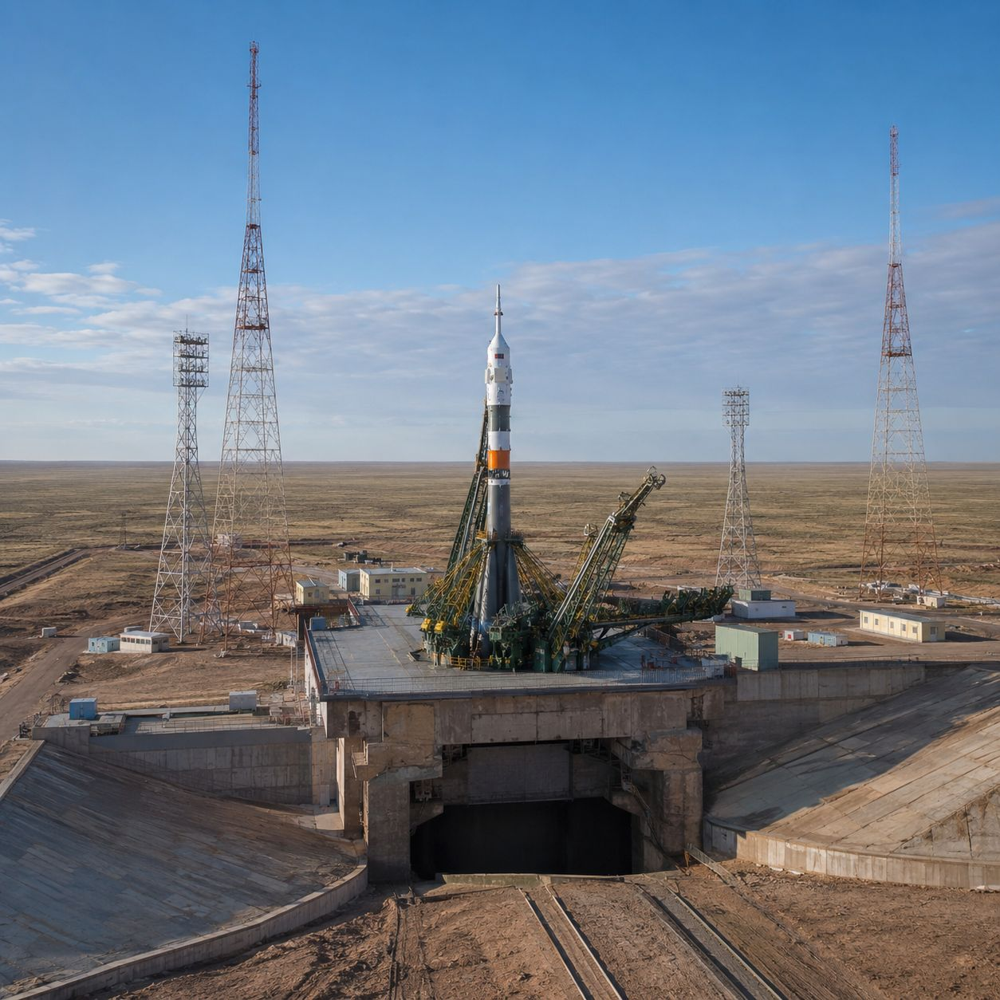
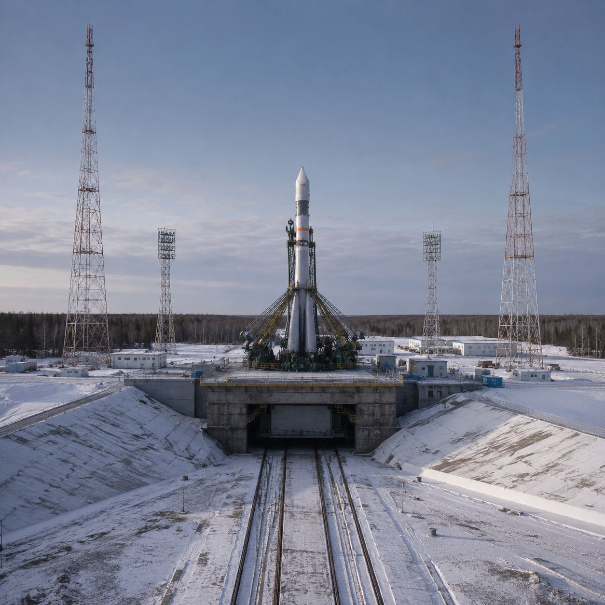
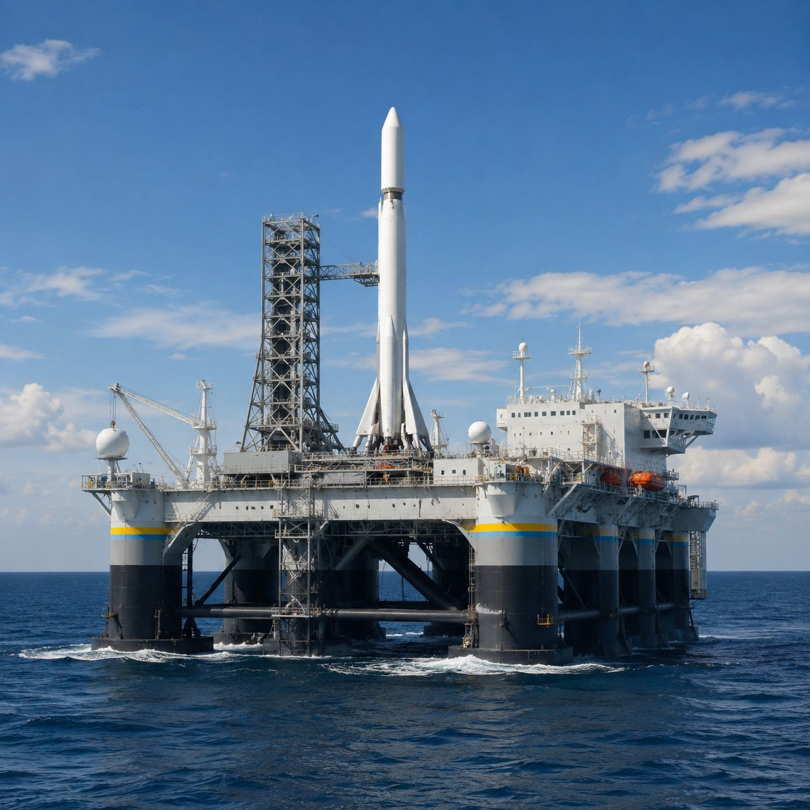
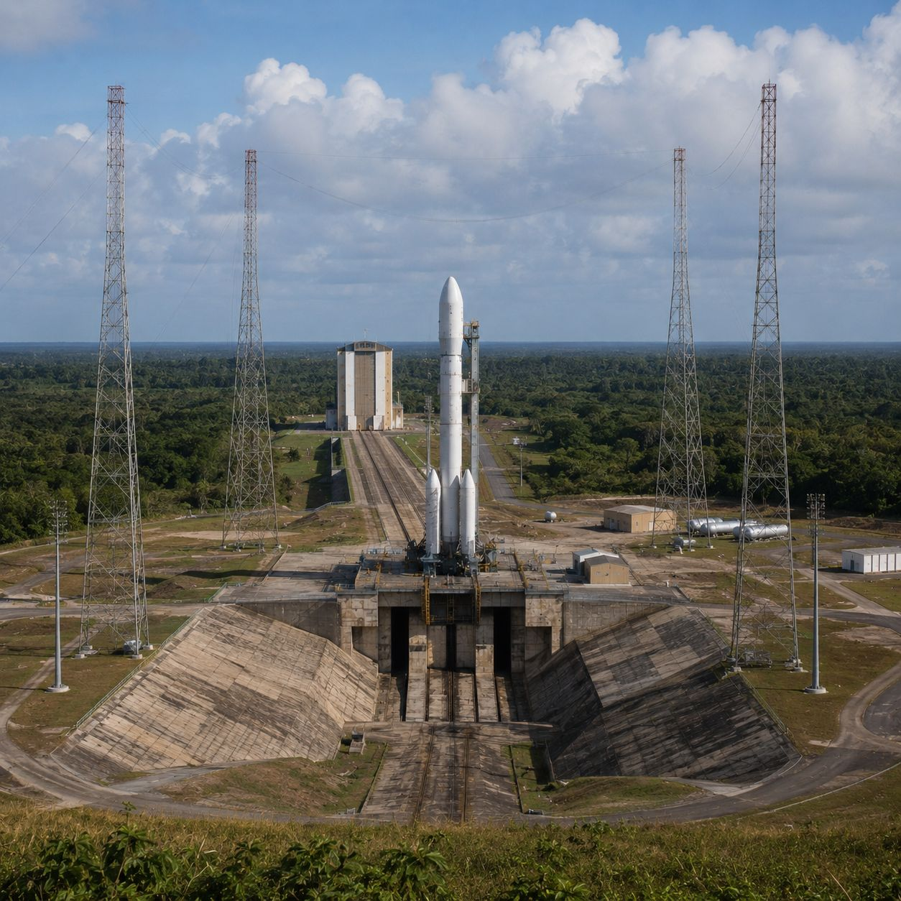
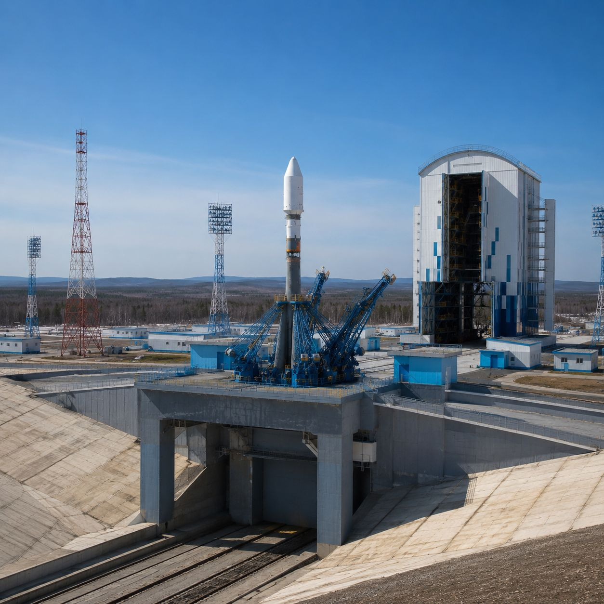
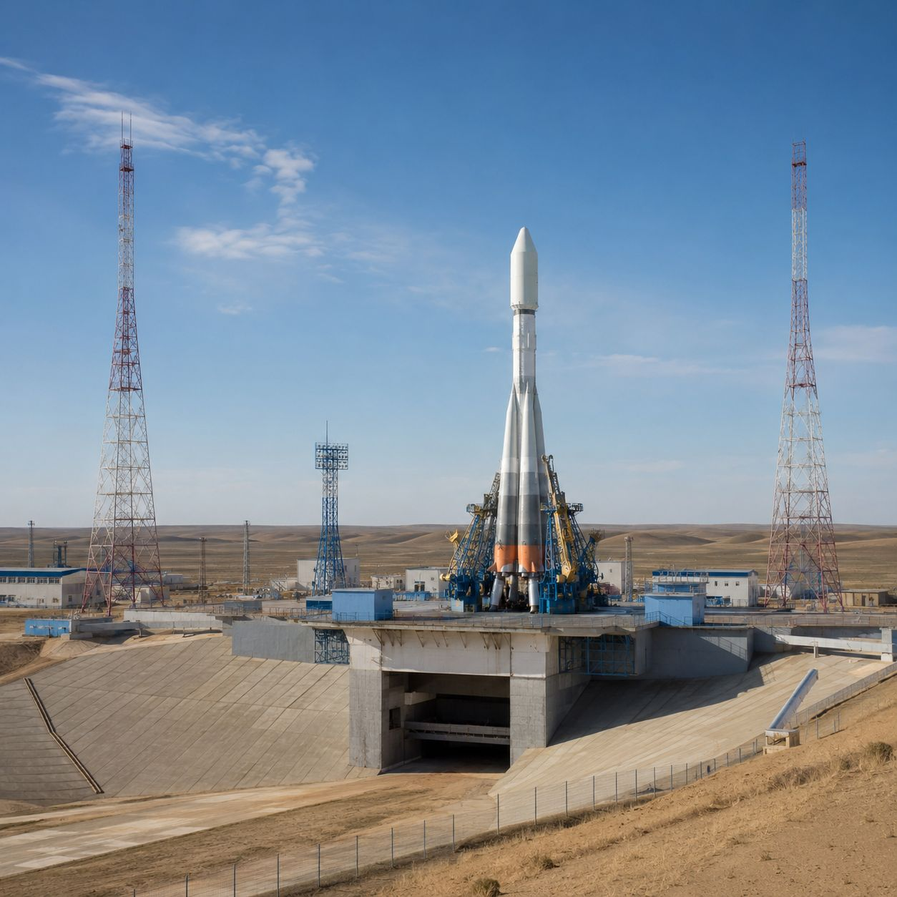
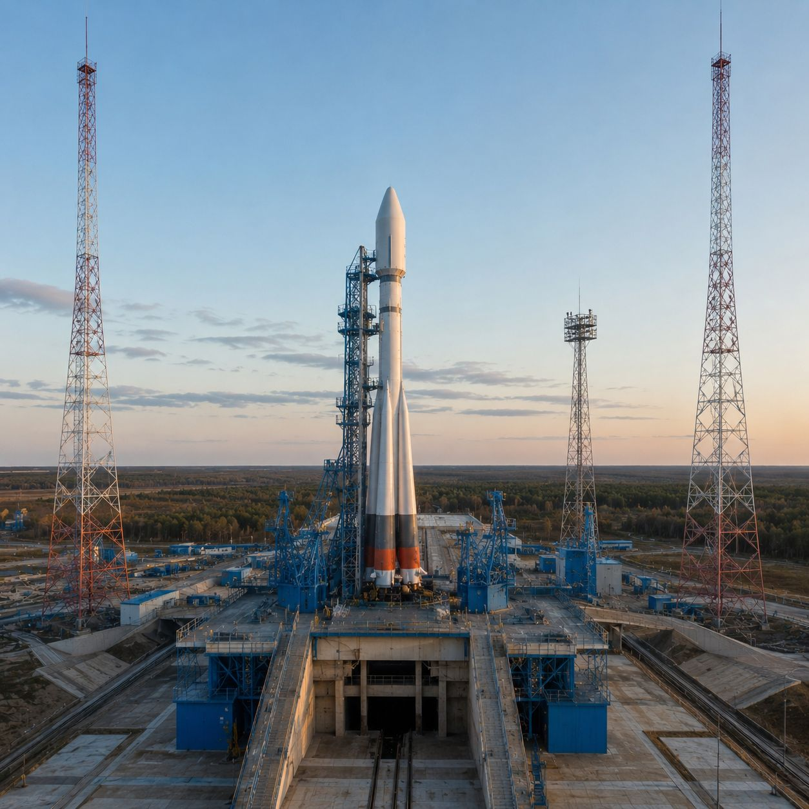
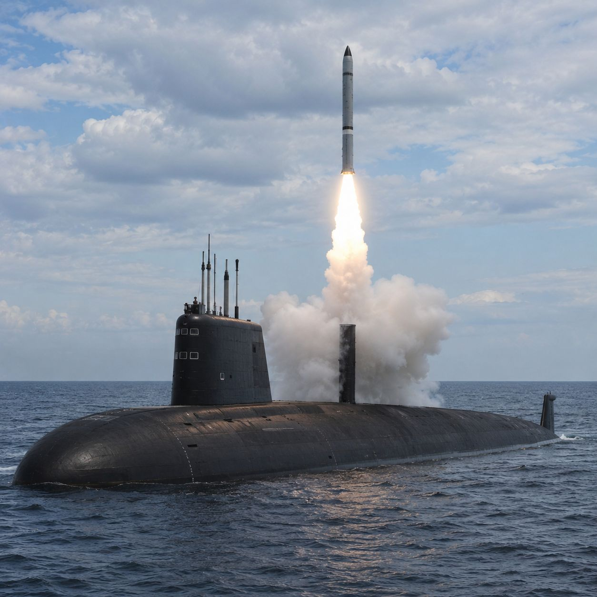
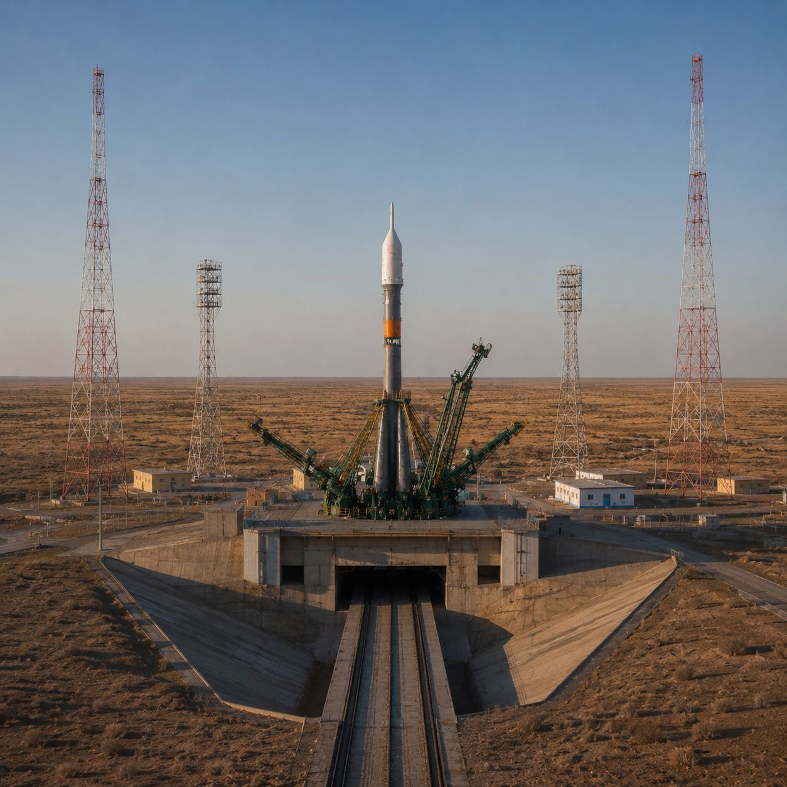

1991 — 2025: факты, запуски и достижения, которые остались незамеченными за тенью советского прошлого.
Когда речь заходит о покорении космоса, первое, что приходит на ум большинству из нас — это запуск первого спутника, легендарное «Поехали!» Юрия Гагарина или величественная станция «Мир». Эти победы стали символами эпохи и навсегда вошли в историю человечества. Однако время не стоит на месте, и за последние 34 года космонавтика претерпела колоссальные изменения.
Сегодня в информационном поле часто теряются новости о современных достижениях. Новые ракеты-носители, амбициозные межпланетные станции, передовые астрофизические обсерватории и международные проекты часто остаются в тени громких успехов прошлого.
Результаты опроса: что россияне помнят о достижениях космической отрасли
Подавляющее большинство ассоциирует космонавтику с успехами эпохи СССР. Инновационные проекты нашего времени (построение нового космодрома, разработка тяжёлых ракет-носителей, научные прорывы обсерваторий) известны гораздо меньшему кругу лиц.
Данные по запускам и инфраструктуре с 1991 года.









Как выглядит современная российская космонавтика? Это сплав советского фундамента и цифровых технологий будущего. В хронологии 1991–2025 годов — переход от устаревших систем к «Ангаре» и «Союзу-5», создание спутников с искусственным интеллектом на борту, возобновление лунной программы и уникальные эксперименты на МКС. Каждый представленный здесь блок — это не просто дата, а результат тысяч испытаний и конструкторских решений, которые обеспечивают космическую независимость страны и открывают путь к дальнему космосу.